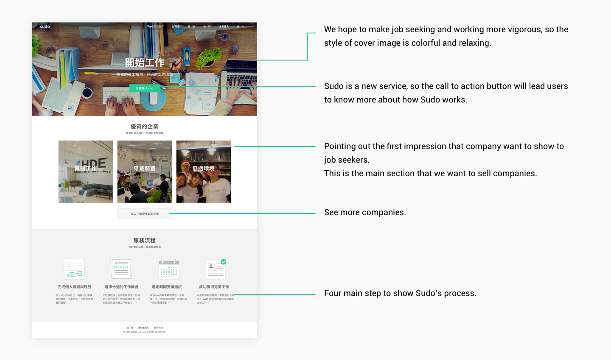
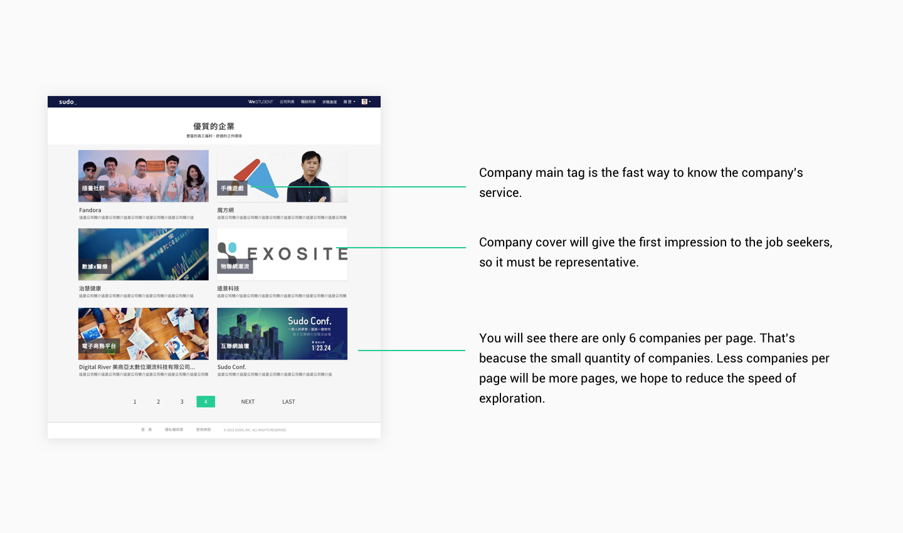
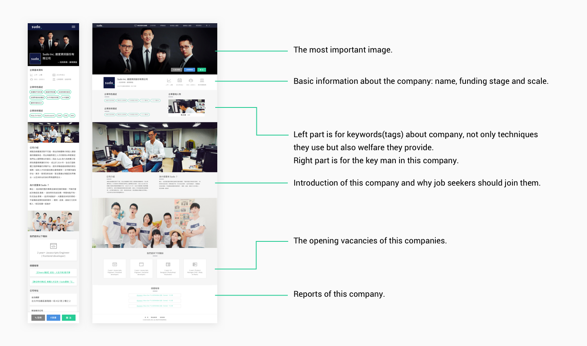
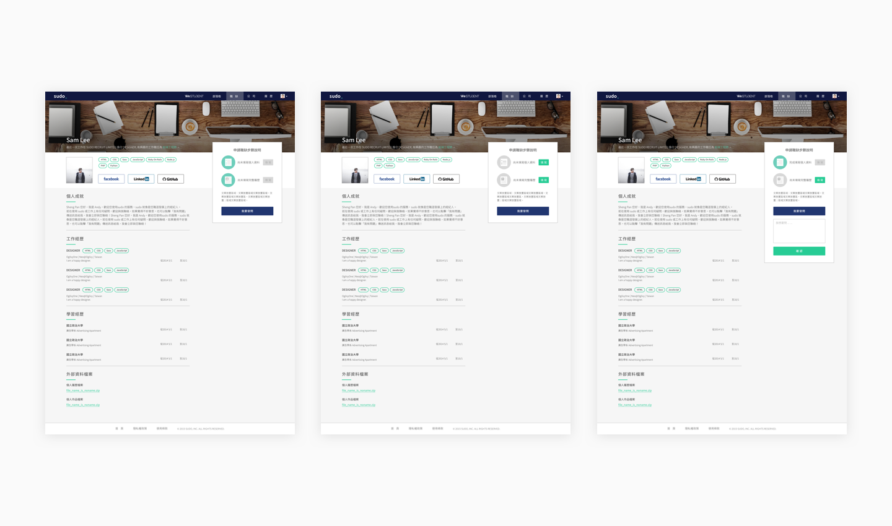
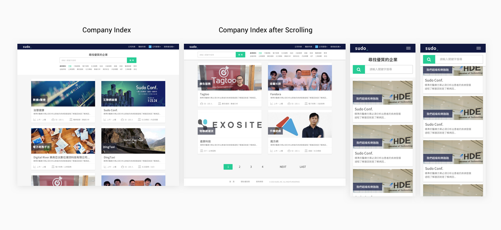
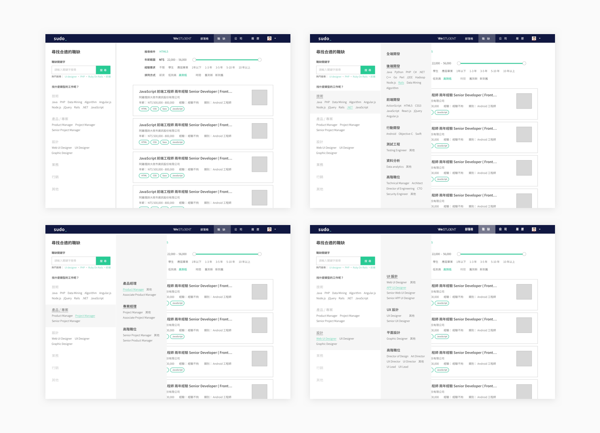
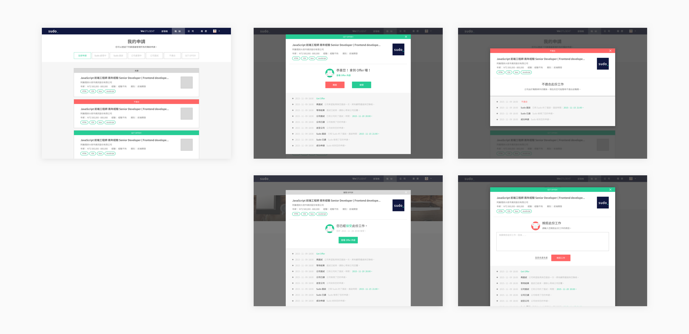
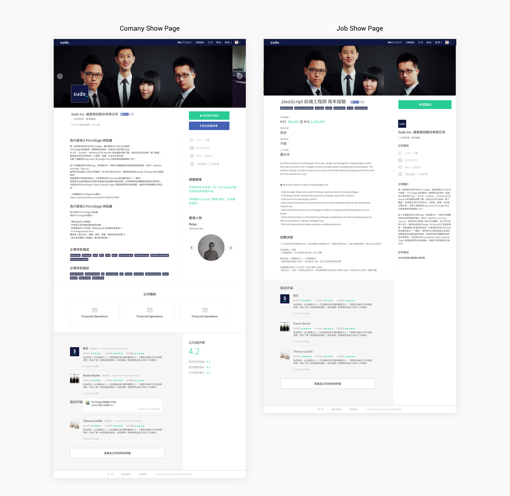
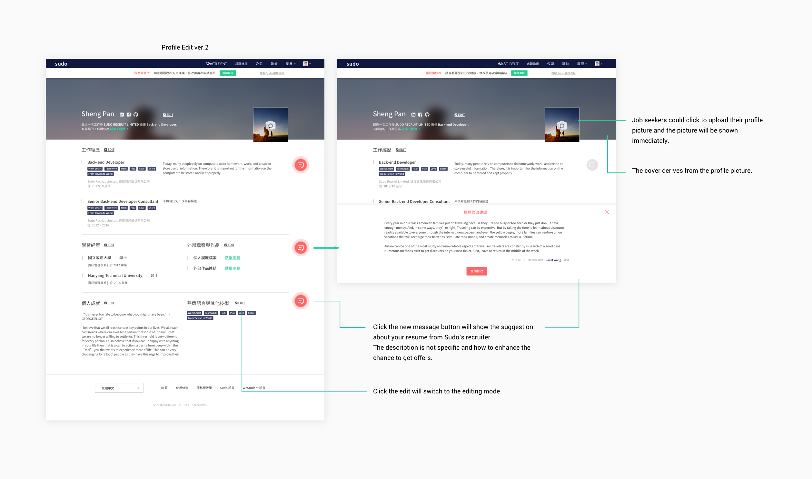
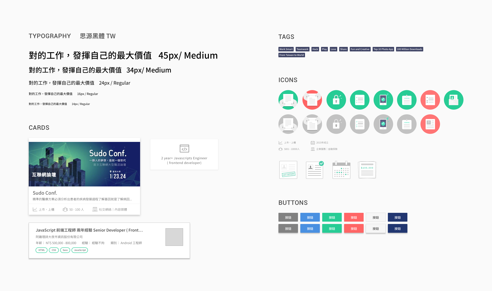

Sudo Recruit
websites and mobile applications
Oct. 2013 - Oct. 2016
UI/ UX

websites and mobile applications
Sudo Recruit is a platform not only helps companies find good talents but also provides good positions for job seekers. We hope to make the process of job seeking more efficient.
Before we figure out solutions to speed up the process, we need more data like the behavior of job seeker, the preference of job seeking and other factors that will impact job seekers decisions on choosing vacancy or company.
On the other hand, company is another important factor that determine the whole process efficiency. We have to learn about what kind of talent company will recruit due to the funding stage, culture and so on.
To learn more about the journey (or process) of job seeking and recruiting, we developed a job platform.
A job platform needs users (job seekers) and companies. We decided to grow the company side on the libra. Focusing on company side, we created a flow that didn’t put vacancy or position at the first place. How to SELL company is the mission in the first stage of Sudo.

At the begin, job was not the primary thing we would like to sell. We try to sell the atmosphere, the culture and the environment of the company.
Company index page shows the culture, atmosphere, environment and team size through the cover image.
Pictures are always eye-catching. To show much information about what the office looks like and team members as possible, there are three parts of cover image in company show page.
There are too many things to do on the resume. Writing resume is time costing. We separate resume into few parts, it reduce the resistance to complete the resume.

Every job seeker could apply for jobs after Sudo reviewed their resume. The profile show page shows the status of the reviews.
As the quantity of companies grew, we applied elastic search to help job seekers find companies they are interested in. On the other hand, job search is needed as the company users grew.
Now we have enough job vacancies on Sudo. Back to the journey of job seeking, we knew that job is more inviting than companies.
As a result, we changed the main selling point of our landing page. By showing categories of jobs, we got more user exploring on our sites. Search bar on the landing page made job seeking more convenient.
At this version, we highlighted the information based on the survey result from the job seekers. Before job seekers got to the company show page, they would care about the funding stage, company scale(how many people) and the service they provide. We grabbed those information out and put them on the company index page.
For Legibility of the information, card style is the final decision we made to renew our company index page
As the volume of job growing up, we need not only a page but also a tool for job seeking. Job index page is a feature that we try to make job seeking more precise, so it is our first try.
Waiting is very suffering after job seekers submit the applications. Job seekers could trace the status of the application they submitted. When the application got rejected, when they got the offer… There won’t be any “no response” after applying for those vacancies.
At this stage, we grew up our company clients and job seekers volume. We hope to make both of them satisfied, so we did some updates to create better experience.
After receiving lots of feedback from users, we decided to combine Edit page and show page. Job seekers will see their resume immediately after editing.
We thought image of company help to describe the environment, culture and so on. Yes, the images do. But the key point that had job seekers make decision is the information about the funding stage, team size etc.
The survey tells job seekers find jobs in a fast tempo, and the big heavy image cover let the information scatter around the page.
New company show page grouped up those information and combined three images into one place(display by carousel).
At the bottom of the page, we try something new: discussion feature. We hope job seekers get more information that can’t be seen on the company show page, more deep information about that company or job from people who worked there before.
Because of the fast retention, the interfaces between versions were quite different. We need to define our components to make our interfaces more consistent.
{kind=link}
{kind=link}
{kind=link}
{kind=link}
{kind=link}
{kind=link}
{kind=link}
{kind=link}
{kind=link}
{kind=link}
{kind=link}
{kind=link}
{kind=link}